1. Estadística
Es la ciencia que se encarga de la recolección, ordenamiento, representación, análisis e interpretación de datos generados en una investigación sobre hechos, individuos o grupos de los mismos, para deducir de ello conclusiones precisas o estimaciones futuras (Castillo y Salazar, 2018. p. 13).
1.1 División de la estadística
De acuerdo con Castillo y Salazar (2018) la “estadística se divide en dos grandes ramas: estadística descriptiva o matemática y estadística inferencial” (p.14).
Estadística descriptiva
Permite analizar todo un conjunto de datos, de los cuales se extraen conclusiones valederas, únicamente para ese conjunto. Un ejemplo sería el número de goles de un determinado jugador o el número de muestras rechazadas en un laboratorio.
Estadística inferencial
Busca obtener conclusiones generales de una determinada población, mediante el estudio de una muestra representativa sacada de ella. Un ejemplo sería la percepción de inseguridad en una ciudad, o la calidad de un cuerpo de agua.
1.2 Variables en la estadística
Cuando se habla de variable se hace referencia a unas propiedades o características que puede variar, y que son susceptibles de medición. Algunos ejemplos pueden ser la edad, color de ojos, potencial de Hidrógeno (Ph), temperatura y conductividad.
Estas variables están categorizadas en dos grandes grupos (Castillo y Salazar, 2018. pp. 15-17), que se describen a continuación:
Variables cuantitativas
Expresan valores numéricos. Pueden ser discretas (se determinan mediante conteos) o continuas (se determinan mediante medición). Algunos ejemplos pueden ser: peso, temperatura, altura entre otras.
Variables discretas
Son aquellas que toman valores aislados, es decir no admiten valores intermedios entre dos números. Un ejemplo puede ser: el número de mujeres en una población.
Variables continuas
Son aquellas que puede tomar valores comprendidos entre dos números. Un ejemplo puede ser: la temperatura de diferentes muestras: 24,5 - 25,2 - 22,6.
Variables cualitativas
Expresan atributos o características. Algunos ejemplos pueden ser: nacionalidad, idioma, color de ojos, entre otras.
1.3 Medidas de tendencia central
Las medidas de posición o de tendencia central permiten determinar la posición de un valor respecto a un conjunto de datos, el cual se considera como representativo o típico para el total de las observaciones.
Media aritmética
Busca el valor central del recorrido de la variable según la cantidad de observaciones, en otras palabras, es el promedio de los valores de la muestra (Castillo y Salazar, 2018. p. 50).
Su cálculo para datos desagrupados se efectúa mediante la siguiente ecuación:
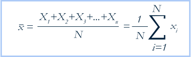Ejemplo
Hallar el caudal promedio a partir de las siguientes mediciones realizadas en un periodo de tiempo determinado: 1,8 l/s, 2,4 l/s, 2 l/s, 1,6 l/s, 1,4 l/s
Mediana
Busca determinar el valor que tiene aquella observación que divide la cantidad de las mismas en dos mitades iguales.
Su cálculo para datos desagrupados se efectúa mediante las siguientes ecuaciones:
En caso de que el número de datos sea par:
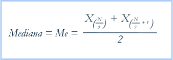En caso de que el número de datos sea impar:
En los dos casos es necesario primero ordenar los datos de menor a mayor o viceversa (Castillo y Salazar, 2018. pp. 52-53).
Ejemplo 1.
Se realizaron 12 mediciones de caudal obteniendo los siguientes resultados: 1,8 - 2,4 - 2 - 1,6 - 1,4 - 1,3 - 1,6 - 1,9 - 2,5 - 2,3 - 2,1 - 1,7
Se ordenan los datos:
1,3 - 1,4 - 1,6 - 1,6 - 1,7 - 1,8 - 1,9 - 2 - 2,1 - 2,3 - 2,4 - 2,5
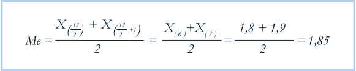1,3 - 1,4 - 1,6 - 1,6 - 1,7 - 1,8- 1,85 - 1,9 - 2 - 2,1 - 2,3 - 2,4 - 2,5
Ejemplo 2.
Se realizaron 12 mediciones de caudal obteniendo los siguientes resultados: 1,8 - 2,4 - 2 - 1,6 - 1,4 - 1,3 - 1,6 - 1,9 - 2,5 - 2,3 - 2,1 - 1,7 sin embargo, por error en el procedimiento se rechazó la última medición (1,7), obteniendo solo 11 datos válidos.
Se ordenan los datos:
1,3 - 1,4 - 1,6 - 1,6 - 1,8 - 1,9 - 2 - 2,1 - 2,3 - 2,4 - 2,5
Este es un paso esencial para resolver el ejercicio ya que si no se ordenan las cantidades no se puede determinar la mediana
1,3 - 1,4 - 1,6 - 1,6 - 1,8 - 1,9 - 2 - 2,1 - 2,3 - 2,4 - 2,5
Moda
Es el valor de la variable que más se repite. Un conjunto de datos puede ser unimodal (una sola moda), bimodal (dos modas) o multimodal (más de dos modas) (Castillo y Salazar, 2018. p. 54).
Ejemplo 1.
Se realizaron mediciones de caudal obteniendo los siguientes resultados: 1,8 - 2,4 - 2 - 1,8 - 1,4 - 1,3 - 1,6 - 1,8 - 2,5 - 2,3 - 2,1 - 1,7
Al ordenar los datos se obtiene:
1,3 -1,4 - 1,6 - 1,7 - 1,8 - 1,8 - 1,8 - 2 - 2,1 - 2,3 - 2,4 - 2, 5
El valor que más se repite es 1,8.
1.4 Medidas de dispersión
Las medidas de dispersión son las que se usan para obtener información sobre el grado de variabilidad de una variable, en otras palabras, los datos indican si una variable cambia drásticamente o más bien su cambio es muy poco con respecto a un número específico (variable de estudio). A continuación se revisa con mayor detenimiento la llamada desviación típica.
Desviación típica
Proporciona el valor promedio de las desviaciones de los datos con relación a la media aritmética. Su cálculo para datos desagrupados se puede realizar mediante la siguiente ecuación:
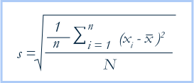Ejemplo 1:
En una práctica de laboratorio cinco personas diferentes realizaron la medición de pH a la misma muestra de agua obteniendo los siguientes resultados:
La desviación indica que los datos varían en promedio +/- 0,43 en relación con la media (x̄).
En todos los casos revisados anteriormente es necesario tener presente que el uso de herramientas ofimáticas como las hojas de cálculo, permiten el procesamiento rápido y sencillo de cantidades significativas de datos. Por lo que resulta necesario su estudio y práctica.
2. Sistemas de unidades
Un sistema de unidades especifica las anteriormente mencionadas de las cantidades fundamentales de longitud, masa, tiempo y fuerza. Las unidades de otros términos se derivan de estas (Mott, 2006, p. 4).
2.1 Sistema internacional de unidades
La referencia estándar para unidades de medida a nivel mundial es el Sistema Internacional de Unidades (SI) (Mott, 2006, p. 4). Nava et al (2001) indica que este cuenta con siete unidades bases para las magnitudes fundamentales como se muestra en la siguiente tabla:
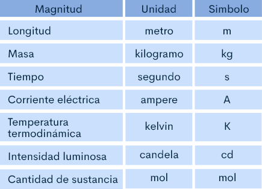Fuente: Nava et al. 2001. p. 20.
2.2 Prefijos del sistema internacional de unidades
Los prefijos son representados por símbolos que se anteponen a la unidad, y representan un factor por el que debe ser multiplicada la cantidad. En la siguiente tabla se presentan algunos de los prefijos más usados en nuestro campo de estudio.
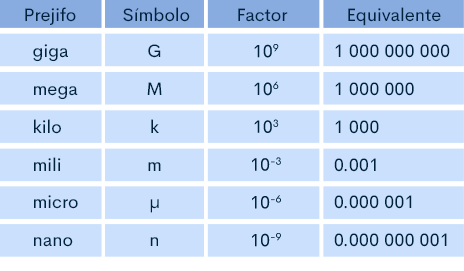Fuente: modificado de Nava et al. 2001. p. 35.
Ejemplo 1:
11500 m=11,5*103 m=11,5 km
Ejemplo 2:
0,00528 g=5,28*10-3 g=5,28 mg
2.3 Uso de otras unidades
Existen otras unidades que se usan con bastante frecuencia y que aun sin hacer parte del Sistema Internacional de Unidades, es posible emplearlas en conjunto. Entre estas encontramos:

El minuto (m): 1 m = 60 s
La hora (h): 1h = 3600 s
El día (d): 1 d = 24 h = 86400 s
El litro (L,l): 1 L = 1 dm3= 10-3 m3
La tonelada (t): 1 t = 103 kg
2.4 Unidades consistentes
El desarrollo de los protocolos y procedimientos en este y diferentes campos de estudio involucra el uso de ecuaciones, cuyos elementos y resultados deben ser expresados empleando las unidades correctas. Por lo que, si las unidades en la ecuación no son consistentes, las respuestas serán erróneas (Mott, 2006, p. 9).
Por lo anterior para realizar procedimientos de cancelación de unidades Mott (2006) propone los siguientes pasos (pp. 9,10):
Despejar de la ecuación el término que se desea.
Definir las unidades que se requieren para el resultado.
Sustituir en la ecuación los valores con sus respectivas unidades.
Cancelar las unidades de los términos que parezcan en el numerador y el denominador.
Utilizar los factores de conversión para eliminar las unidades no deseadas, y obtener las que se definieron previamente en el paso dos.
Realizar el cálculo.
Ejemplo:
Se necesita conocer el tiempo que tardará en llenarse un tanque de 1000 L al usar una manguera por la que fluye un caudal de 0.4 L/s.
Se emplea la ecuación:
Donde Q es caudal, v es volumen y t es tiempo. Luego se aplican los pasos anteriormente propuestos:
Se despeja t de la ecuación:
Propone las unidades del resultado, para este caso pueden ser minutos, ya que el ejercicio no especifica las unidades finales.
Se sustituye en la ecuación
simplifica la fracción para
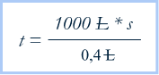Se cancelan las unidades y se aplican los factores de conversión (paso 5).
Aplica los factores de conversión (y cancelación de unidades)
Se realiza el cálculo para obtener el resultado.
3. Medición de masa y volumen
3.1 Conceptos generales de masa y peso
Cuando se habla de la masa se hace referencia a la cantidad de materia que contiene un cuerpo. La masa es diferente del peso, ya que este, es el producto de la masa del cuerpo por la fuerza gravitatoria que actúa sobre el mismo (Alsina et al, 2015, p. 2). Su expresión es la siguiente:
Donde
w= peso, expresado en kg*m/s2 o newton (N)
m= masa, expresada en kg
g = gravedad, expresado en m/s2
Así, una muestra con una masa (m) de 1 kg, tendrá un peso (w) en la tierra y otro en la luna debido a la diferencia en la gravedad (g).
Medición de la masa
En las actividades de muestreo y laboratorio lo más convencional es trabajar la masa en gramos, para lo cual se pueden emplear diferentes tipos de balanzas como: analíticas, de pesas, romanas, entre otras.
También es bastante habitual emplear los múltiplos y submúltiplos del gramo; recordando el uso de prefijos se puede trabajar con miligramos (mg) o kilogramos (kg).
1000 g = 1 kg
1000 mg = 1 g
Así, si se tiene un litro de agua a 4°C su masa será de 1000 g o 1 kg.
Tipos de balanzas
La diferencia entre las balanzas puede radicar en los principios que se emplean para la medición, criterio de metrología e incluso por su diseño. Sin embargo, es posible agrupar las balanzas en dos grupos: electrónicas y mecánicas (OMS, 2005, p. 43).
Balanzas mecánicas
De acuerdo con la OMS (2005), en su publicación Manual de mantenimiento para equipos de laboratorio (p. 44), algunas de las más comunes son las de resorte, de pesa deslizante, de plato superior, analítica o de sustitución. A continuación, se describe quizá dos con las que usted puede estar familiarizado:
Balanza de resorte
Funciona basada en una propiedad mecánica de los resortes. Mientras más grande sea la masa [m] que se coloca en el platillo de la balanza, mayor será la elongación, siendo la misma proporcional a la masa y a la constante del resorte. Se utilizan si no se requiere gran precisión.
Balanza analítica
La medición se realiza mediante la comparación de piezas con una masa conocida, con la masa de la sustancia para la que se desea conocer su peso. Estas piezas son seleccionadas de un juego de masas certificado.
Las balanzas mecánicas requieren de una verificación previa a su uso, qué consiste en de maneral general en los siguientes pasos:
Verificar la nivelación de la balanza.
Comprobar el punto cero.
Verificar y ajustar la sensibilidad.
Confirmar el freno del platillo.
Es recomendable realizar una calibración anual y mantenimiento preventivo acorde a lo definido por el fabricante. Ambas actividades deben ser desarrolladas por personal especializado.
Balanzas electrónicas
Estas son las balanzas más frecuentes en los laboratorios. Las balanzas electrónicas involucran tres elementos básicos (Kupper, sf, como se citó en OMS, 2005, p. 46)
El platillo de pesaje que transfiere la fuerza del objeto a ser medido, mediante un mecanismo de transferencia – palancas, apoyos, guías –.
Un transductor de medida, conocido con el nombre de celda de carga, que produce una señal de salida proporcional a la fuerza de carga, en forma de cambios en el voltaje o de frecuencia.
Un circuito electrónico análogo digital que finalmente presenta el resultado del pesaje en forma digital.
En función de su exactitud se pueden clasificar en: especial, alta, media y ordinaria.
Instalación y utilización. Con el objetivo de reducir la interferencia y errores de medición durante el uso de este tipo de balanzas, es recomendable tener en cuenta las siguientes condiciones (OMS, 2005, p. 49):
Disponer de un ambiente que no presente corrientes de aire, cambios bruscos de temperatura y que esté libre de polvo.
Tener un mesón perfectamente nivelado, que reduzca el efecto de vibraciones.
Evitar la influencia directa de corrientes de aire y luz solar.
Disponer de una toma eléctrica en buenas condiciones y con polo a tierra.
Así mismo para su utilización es necesario a manera general seguir las recomendaciones que se presentan a continuación:
Permitir que la balanza se precaliente antes de iniciar las actividades. Normalmente basta que la misma se encuentre conectada al sistema de alimentación eléctrica. Las balanzas analíticas Clase I requieren al menos 2 horas antes de iniciar su utilización.
Verificar que la balanza se encuentre calibrada.
Seguir las instrucciones que indica el fabricante. en el manual de operación.
Una vez finalizado su uso se debe realizar la limpieza del platillo de pesaje y la cámara de pesaje.
3.2 Conceptos generales de volumen
El volumen se entiende como la cantidad de espacio tridimensional que ocupa un cuerpo. En el Sistema Internacional la unidad de volumen es el metro cúbico (m3) la cual se deriva de la unidad fundamental de longitud que es el metro (m). Sin embargo, es común emplear submúltiplos como el centímetro cúbico (cm3) (Chang, 2002, p. 15).
Tal como se mencionó en los temas anteriores, es posible emplear otras unidades en conjunto con el SI, en este caso para el volumen se emplea el litro (L). Así las cosas, se puede plantear las siguientes equivalencias:
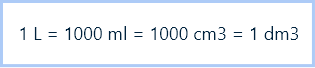Medición de volumen
Para medir el volumen de un líquido se emplea material volumétrico que puede estar fabricado en plástico o en vidrio; como parte de este material se encuentran los matraces aforados, pipeta aforada, pipeta graduada, probeta graduada y la bureta (Brand, 2015, p.5).
Material volumétrico
Es posible manejar dos grupos para el material volumétrico: ajustados por contenido “In” y ajustado por vaciado “Ex”. En el primero el volumen es calculado a partir del llenado del material, mientras que en el segundo el volumen es medido mediante el vaciado del contenido inicial. Un ejemplo de aparatos volumétricos ajustados por vertido ‘Ex’ puede ser las pipetas; como ejemplo de aparatos volumétricos ajustados por contenido ‘In’ están los matraces aforados.
Carranza (2013) realiza una descripción de los principales materiales volumétricos así:
Lectura del menisco
Durante la medición del volumen de líquidos se debe tener en cuenta la ubicación del menisco en relación con la marca de lectura. El término 'menisco' se utiliza para describir la curvatura de la superficie del líquido. El menisco adopta forma convexa o cóncava. La formación de la curvatura resulta de la relación de fuerzas entre adhesión y cohesión (Brand, 2015, p.10).
Limpieza del material
Para la limpieza, muchas veces es suficiente una disolución de un detergente común. En caso de que no fuera suficiente, se puede utilizar mezcla crómica o una disolución de hidróxido de potasio en alcohol (esta última no debe dejarse mucho tiempo en contacto con el vidrio porque lo ataca lentamente).
Siempre que se utilice una disolución de limpieza, el recipiente se lavará cuidadosamente, primero con agua corriente y después con agua destilada para verificar que las paredes queden uniformemente humedecidas.
El material aforado no debe ser secado en estufa ya que puede provocar distorsión del vidrio y causar un cambio en el volumen.
Material no calibrado
A diferencia del material que se ha descrito, el material no calibrado es empleado para almacenar, mezclar, realizar pruebas de precipitado, entre otras actividades que no requieran un volumen preciso. No es empleado para medir ya que la medición en este tipo de elementos es inexacta. Como ejemplo de estos es posible mencionar el beaker, erlenmeyer, tubos de ensayo, entre otros.
4. Fichas técnicas y manuales
4.1 Calibración de equipos
Para la Universidad Tecnológica de Pereira en su procedimiento para manejo de equipos, la calibración es:
El conjunto de operaciones que establecen, bajo condiciones especificadas, la relación entre los valores de magnitudes indicados por un instrumento o sistema de medición, o valores representados por una medida materializada o un material de referencia y los correspondientes valores aportados por patrones. Por lo tanto, la calibración solamente se puede realizar a instrumentos de medida de cualquier magnitud (tensión, corriente, resistencia, tiempo, frecuencia, potencia óptica, etc.) y que exprese la medida en las unidades básicas del Sistema Internacional (SI) o materiales de referencia (2019, p.3).
En los procesos experimentales y técnicos, el fin es obtener resultados que puedan arrojar el estado de una muestra, pero estos resultados deben tener total validez científica para que los estudios realizados sean aprobados tanto nacional como internacionalmente.
De lo anteriormente expuesto, se obtiene la importancia de los procesos de calibración de los equipos e instrumentos usados, de acuerdo con el Instituto Colombiano de Normas Técnicas y Certificación [ICONTEC] (2017), en su Norma Técnica Colombiana [NTC] 17025 sobre requisitos generales para la competencia de los laboratorios de ensayo y calibración. En su ítem 6.4.6 especifica que se requiere calibración del equipo para establecer la trazabilidad metrológica de los resultados informados (p.7).
Es por esto que usualmente los laboratorios certificados deben mantener un programa de calibración en el cual especifique los procedimientos para mantener cada equipo o instrumento que requiera de este proceso en óptimas condiciones y la documentación pertinente.
Como este proceso puede variar entre las marcas y el tipo de instrumento, siempre es aconsejable que dependiendo del laboratorio donde se van a realizar los ensayos o del cual provengan los equipos de campo, se estudie los procedimientos, protocolos o instructivos de calibración con anterioridad. Es importante realizar siempre esta actividad según lo establecido en la documentación del equipo.
Sin embargo, a manera de estudio, puede ampliar la información de cómo calibrar algunos equipos en el manual de técnicas analíticas para la determinación de parámetros fisicoquímicos y contaminantes marinos del instituto de investigaciones marinas y costeras [INVEMAR] (2003), en el capítulo de parámetros in situ.
De igual forma, al ser un paso tan importante en materia de prácticas y ensayos de laboratorio, existen entidades que se dedican exclusivamente al desarrollo de actividades de calibración de equipos, que han sido certificadas para la misma y que ofrecen además un documento de soporte denominado certificados de calibración o informes de calibración.
Contenido de los certificados
De acuerdo con el Instituto Colombiano de Normas Técnicas y Certificación [ICONTEC] (2017), en su Norma Técnica Colombiana [NTC] 17025 sobre requisitos generales para la competencia de los laboratorios de ensayo y calibración, indica que el contenido mínimo necesario que debe contener un certificado de calibración se encuentra establecido en la norma internacional ISO 17025 en su numeral 7.8.2.1 Este incluye:
Identificación del informe de ensayo, el nombre y dirección del laboratorio.
El lugar en que se realizan las actividades del laboratorio.
Nombre del cliente o quien solicita el certificado.
Método utilizado.
Descripción del instrumento bajo calibración.
Identificación del dueño del instrumento.
Fecha de calibración y próximas calibraciones.
Referencia al plan y método de muestreo usados para laboratorio.
Método de calibración.
Las condiciones relevantes observadas durante la calibración.
El método de calibración.
Las desviaciones o exclusiones del método.
Una identificación clara cuando los resultados provengan de proveedores externos (p.17).
Para ampliar diríjase a la base de datos del SENA/ICONTEC/ ISO 17025
Ir a ICONTEC y buscar número 17025 para obtener el documento norma NTC 17025:2017
4.2 Hojas de seguridad de productos químicos
El manejo de diferentes sustancias químicas para el procesamientos de muestras de agua tanto en campo como en laboratorio, implica un riesgo para el personal que las manipula, este riesgo debe ser controlado, desde el almacenamiento, compra y transporte de la sustancia hasta el momento en el cual se materialice un accidente relacionado a ese producto; es por esto que debe existir un instrumento que le permita a las personas involucradas empleados o comunidad) o al personal de asistencia médica (o de servicios de respuesta ante emergencias), saber los compuestos, el tipo de manipulación, como almacenarla y cómo reaccionar ante un accidente con la misma.
Ese instrumento de gestión se denomina Hojas de seguridad de producto, en Colombia este es un elemento fundamental para toda la cadena de manipulación de las sustancias químicas y se convirtió en un eje estratégico para los sistemas de seguridad y salud en el trabajo en cualquier entidad (pública y privada).
La estructura de las hojas de seguridad y su uso obligatorio en las organizaciones fue impuesta por diferentes bases normativas:
Decreto 1496 de 2018 (Por el cual se crea Sistema Globalmente Armonizado de Clasificación y Etiquetado de Productos Químicos y se dictan otras disposiciones en materia de seguridad química).
Norma Técnica Colombiana [NTC] 4435 de 1998 (Sistema Globalmente Armonizado de Clasificación y Etiquetado de Productos Químicos y se dictan otras disposiciones en materia de seguridad química).
Norma Técnica Colombiana [NTC] 4532 de 1998 (Transporte de mercancías, tarjetas de emergencia para transporte de materiales, elaboración).
Estas hojas de seguridad son un instrumento que cuenta con 16 ítems o secciones, o también conocidas como fichas de seguridad [FDS], es importante aclarar que según el Ministerio de trabajo en la Resolución 1486 (2008) en el artículo 8º y 9º asigna a los fabricantes e importadores la responsabilidad de elaborar, revisar y actualizar las FDS (p.5).
Sin embargo, es responsabilidad de todos los que van a manipular estas sustancias, conocer la FDS y apropiar sus 16 ítems básicos que según la Organización de las Naciones Unidas para el Desarrollo Industrial [ONUDI] (2020), son:
Identificación del producto.
Identificación de peligros.
Composición (información sobre los componentes).
Primeros auxilios.
Medidas de lucha contra incendios.
Medidas que deben tomarse en caso de vertido accidental.
Manipulación y almacenamiento.
Controles de exposición.
Propiedades físicas y químicas.
Estabilidad y reactividad.
Información toxicológica.
Información ecotoxicológica.
Información relativa a la eliminación del producto.
Información relativa a transporte.
Información sobre la reglamentación.
Otras informaciones (pp. 16-17).
Beneficios de FDS.
Para la Organización de las Naciones Unidas para el Desarrollo Industrial [ONUDI] (2020), el uso de estas FDS otorgan beneficios para garantizar la protección de la salud humana y del medio ambiente como lo es: conocer las características de la sustancia, comunicar los peligros, brindar información sobre elementos de protección, condiciones de almacenamiento, transporte, medidas en caso de emergencia, disposición o eliminación de la sustancia y su envase y por último es una herramienta que permite brindar información a entes de vigilancia y control de productos químicos (p.20).
Adicional se incluye a manera de ejemplo una ficha de seguridad para ampliar la información.
Fichas de seguridad de ácido sulfúrico
Fuente: Servicio Nacional de Aprendizaje (SENA). 2018. Fichas de seguridad de ácido sulfúrico. Centro de gestión industrial. Laboratorio Ambiental.
4.3 Manual de operación de equipos
Para todas las empresas de hoy en día la capacitación de nuevo personal para la operación de un determinado equipo implica un gran reto y responsabilidad. Para ello es importante mantener actualizados los procedimientos. En este apartado se habla exclusivamente de los procedimientos de los equipos y los aspectos a tener en cuenta para realizar un manual de operación (Castañeda, 2017).
En cualquier equipo que se compra siempre viene un manual que dice sus funciones específicas. Cuando este equipo llega a una compañía conlleva un desafío para el personal que la opera por primera vez, ya que no ha tenido contacto con la máquina. Tiene que familiarizarse y sobre el camino monitorear su funcionamiento.
La mejor forma de realizar un manual de operaciones es hacerlo de la forma más sencilla, visual y amigable posible para despertar el interés y nutrir el conocimiento del personal.
Entonces, ¿Cuál es el objetivo de un manual de operación? Su respuesta se define como: obtener resultados consistentes en el desarrollo de nuevo personal, estandarizando el conocimiento de forma más rápida y sencilla posible.
Los beneficios de un manual de operaciones son:
Brinda el conocimiento de operación.
La información está al alcance para el desarrollo de nuevo personal.
Desarrolla al personal de una forma más rápida y minimiza los errores.
Es la base para mantener la forma de trabajar o en su caso mejorarla.
Un manual debe tener una estructura formal, para ello es muy importante que cuente elementos como:
Portada.
Índice.
Desarrollo de la información.
Apoyo visual.
El editor debe tener en cuenta que la persona que leerá este manual es alguien quien no ha tenido contacto con el equipo por lo que es de vital importancia:
Identificar los procedimientos de operación. Con base en ellos se debe separar las actividades que se realizan y asignar una secuencia.
Redactar de forma sencilla. No utilizar palabras demasiado técnicas, ya que la mayoría de los operadores no son personas con conocimientos de expertos.
Utilizar imágenes. La imagen deberá identificar el área de trabajo y cada una de las actividades. Esto ayuda al operador a interpretar la información de una manera más sencilla y recordarla posteriormente.
Es muy importante integrar cualquier información que directamente está ligada a la operación, por ejemplo, equipo de seguridad necesario, qué hacer en casos de emergencia etcétera.
Este documento deberá estar aprobado por él o los operadores quienes fueron la fuente de información y por quienes autorizan su publicación.
El manual puede ser tan detallado como se quiera. Hay que tener en cuenta que, si es lo más específico posible, no se dará pauta a la duda.
No hay que olvidar que es un documento vivo y puede sufrir modificaciones, por lo que la información debe actualizarse y documentarse para ser compartida con todo el personal involucrado.
Por lo anterior es importante que antes de operar cualquier equipo se reciba la capacitación inicial y se disponga del manual de operación, reduciendo los errores de operación e incluso evitando su avería por una mala manipulación.
A continuación, se presentan a manera de ejemplo algunos manuales de operación para equipos que muy seguramente usted emplea durante las actividades prácticas:
5. Preparación de soluciones
Como ya se ha mencionado el muestreo involucra el uso de diferentes reactivos que son empleados para la preservación de muestras, por lo que es necesario abordar el siguiente tema sobre la preparación de soluciones, brindando de esta manera los conceptos generales que más adelante serán puestos en práctica durante el desempeño en el laboratorio.
5.1 Disoluciones
La disolución es una mezcla homogénea de dos o más sustancias. Donde la que se encuentra en mayor cantidad es denominada solvente o disolvente, y la que se encuentra en menor cantidad es denominada soluto. Las disoluciones pueden ser gaseosas (como aire), sólida (como una aleación) o líquida (como el agua de mar). (Chang, 2010, p. 106)
Clasificación
Una alternativa de clasificar las soluciones mencionadas anteriormente, es por su estado de agregación (sólidas, líquidas y gaseosas). Otra manera de clasificar las soluciones puede ser según su solubilidad, de acuerdo a Cova (2018) estas pueden clasificarse en (p.7):
Saturadas
Es la disolución que contiene la mayor cantidad de soluto posible en un volumen de disolvente dado y para una cierta temperatura. En ellas el soluto disuelto y no disuelto están en equilibrio dinámico entre sí.
Sobresaturadas
Es la disolución que contiene más soluto del que puede ser disuelto en el disolvente a una temperatura dada. Normalmente se consigue al bajar la temperatura o por evaporación del disolvente en una solución saturada. En este caso, la adición de cristales de soluto puede provocar un precipitado.
Insaturadas
Es aquella disolución que en un volumen solvente dado contiene menor cantidad de soluto de la que es capaz de disolver.
Unidades de concentración
En función de las unidades del soluto se puede expresar la concentración final de la solución así:
Porcentaje masa/masa (% m/m): expresa los gramos de soluto en 100 g de disolución
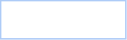Porcentaje masa/volumen (% m/v): expresa los gramos de soluto en 100 mL de disolución
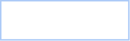Porcentaje volumen/volumen (% v/v): expresa los mililitros de soluto en 100 mL de disolución
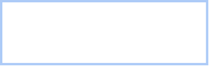Partes por millón (ppm): expresa lo miligramos de soluto en 1 kg de solución
Dependiendo de la densidad de la solución también es posible indicar que 1 ppm corresponde también a 1mg de soluto en 1 L de solución.
Molaridad (M): expresa la cantidad de soluto en moles por litro solución
Normalidad (N): expresa la cantidad de equivalentes de soluto en 1 L de solución
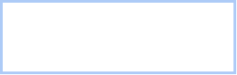Mide la cantidad de soluto requerido para la solución.
Se introduce la cantidad previamente medida de soluto en el material volumétrico que se emplea para la preparación (ejemplo: matraz aforado).
Se agrega un volumen de solvente inferior al volumen del material volumétrico y se mezcla.
Se añade cuidadosamente el volumen de solvente hasta completar el volumen del material calibrado.
Si la solución debe ser almacenada se debe trasvasar a un frasco y etiquetar.
5.2 Diluciones
Una dilución es diferente a una disolución. Cuando se habla de diluciones se hace referencia a la adición de solvente a una solución (Cova, 2018, p. 12). Por lo anterior una dilución tiene como objetivo disminuir la concentración de una solución.
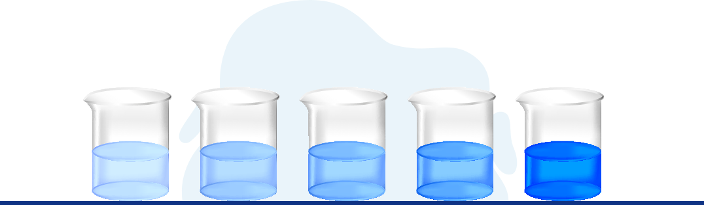Su expresión matemática es la siguiente:
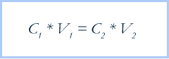donde
C1es concentración inicial
C2es concentración final
V1es volumen inicial
V2es volumen final
Tenga en cuenta que los temas que conforman la presente unidad. Serán profundizados y reforzados mediante las prácticas de laboratorio presenciales programadas para este resultado.
6. Realización del muestreo
6.1 Localización del muestreo

El muestreo de aguas puede tener diferentes fines que van desde conocer las características de la fuente de suministro, hasta determinar las condiciones que presenta un vertimiento. Para localizar el sitio de muestreo debe especificarse concretamente el fin de la muestra y el tipo de agua que se quiere muestrear, ya dependiendo de esto se especifica el lugar exacto y protocolo aplicable para la actividad.
En cualquier caso, siempre es necesario dejar registro detallado del lugar de la toma, incluso si se dispone de GPS se puede posicionar satelitalmente la ubicación
De manera general la información requerida al momento del muestreo debe ser como mínimo, la siguiente (Instituto Nacional de Tecnología Agropecuaria [INTA], 2011, p. 3):
Identificación de la muestra (nombre, código, etc.).

Identificación del sitio de muestreo (georeferenciación: latitud, longitud).
Tipo de fuente y características de esta (pozo calzado, perforación, canal, río, represa, aljibe, profundidad del nivel estático y total si fuera pozo o perforación, diámetro de la perforación o pozo, cercanía a pozos negros o industrias, existencia de pozos abandonados, etc.).
Destino (consumo humano, animal, riego, etc.).
Información acerca del establecimiento y nombre del propietario o encargado (con datos de dirección, e-mail y/o teléfono) donde se ha muestreado e información adicional acerca de problemas que detecta el personal que puede atribuirse al agua.
Nombre de quien realizó el muestreo.
Tipo de análisis a efectuar (fisicoquímico y/o microbiológico).
Reactivo empleado para su preservación, en caso de ser utilizado.
Cualquier otra observación que se considere de importancia.
Igualmente dependiendo del fin de la muestra es posible que se requiera previamente a la actividad, realizar el lavado y desinfección del punto de muestreo para reducir el riesgo de contaminación por presencia de agentes, elementos o compuestos que puedan estar presentes en la estructura debido a su entorno. Para esto es común emplear diferentes agentes como hipoclorito de sodio o calcio (Ortiz, 2011, p. 33).
6.2 Frecuencia del muestreo
La frecuencia con la que se tomarán las muestras puede variar en función de las necesidades de esta. Así mismo dependiendo de su fin es posible que existan tiempos definidos por las autoridades competentes por lo que resulta necesario indagar al respecto.
En todo caso es posible establecer la frecuencia de muestreo a partir de directrices dadas por organizaciones no gubernamentales, que brindan orientaciones con el objetivo de promover la obtención de resultados confiables. Este es el caso de ICONTEC y la NTC-ISO 5667-1, Directrices para el diseño de programas y técnicas de muestreo. Disponible en la base de datos de la Biblioteca SENA.
También puede apoyarse de la ISO 5667-1 Gestión ambiental. Calidad del agua. Muestreo. Directrices para el diseño de programas de muestreo, que se encuentra en la base de datos del SENA del ICONTEC
Ir a ICONTEC y buscar norma NTC 5667-1 y escoger NTC 5667-1:2010.
6.3 Alistamiento de materiales e insumos
Dentro de las actividades previas al muestreo es necesario realizar el alistamiento y verificación de todo lo necesario para salir a campo. Esto involucra un proceso riguroso y detallado para:
Verificación del tipo de muestra y fin (parámetros que se analizaran a estas).
Aplicación de listas de verificación de implementos requeridos. Los cuales se encuentran previamente definidos en los protocolos de muestreo y contemplan recipientes, contenedores, preservantes, equipos de muestreo, formatos para registro, implementos para aforo, elementos de protección, entre otros.
Verificación de las condiciones del material y funcionamiento de equipos, incluida su calibración.
Tal como se explicó en el componente formativo 1, en el tema tamaño de la muestra, es posible verificar el volumen mínimo de muestra, preservantes y tipos de recipientes requerido, consultado en el Standard Methods for the Examination of Water and Wastewater, capítulo correspondiente a recolección y preservación de muestras (Collection and preservation of samples) o en los protocolos de monitoreo del IDEAM.
Adicional se incluye a manera de ejemplo una lista de verificación para la preparación de implementos.
Lista de verificación de materiales e insumos.
6.4 Recolección de muestras
Las actividades de potabilización y saneamiento involucran la recolección de muestras para la determinación de las características de una fuente o verificar la conformidad en el proceso de tratamiento. Particularmente las actividades de monitoreo de agua potable en Colombia y otros países se encuentran reglamentadas, por lo que es necesario como se mencionaba en temas anteriores, realizar la consulta y verificación con las autoridades competentes para desarrollar las actividades de seguimiento acorde al marco normativo vigente.
En el caso de aguas residuales existe una normativa principalmente enfocada a garantizar que las descargas se realicen acorde a unos criterios establecidos, por lo que el muestreo durante el proceso de tratamiento es realizado siguiendo protocolos que garanticen resultados confiables y con altos estándares.
Recolección de agua potable
Tal como se mencionó, garantizar la calidad del agua para consumo humano es un tema que en nuestro país es controlado y supervisado por diferentes autoridades territoriales como el Ministerios de Protección Social y el Ministerio de Ambiente, Vivienda y Desarrollo Territorial. Sin embargo, en esta unidad se revisará de manera general las directrices para realizar la recolección de muestras de agua potable, ya que la normatividad aplicable, protocolos y guías, serán desarrolladas en las siguientes unidades.
Como referencia en este momento es posible tomar la Norma Técnica Colombiana NTC-ISO 5667-5, propuesta por el Instituto Colombiano de Normas Técnicas y Certificación [ICONTEC] (2008), con base en la que se proponen los siguientes elementos para tener en cuenta (pp. 12-14):
Recolección en ríos y corrientes
Se debe recordar que el sitio seleccionado para la recolección de la muestra debe permitir un volumen con condiciones representativas del cuerpo de agua a muestrear, por lo que se procura una distribución homogénea del analito. Sin embargo, es posible seleccionar sitios de muestreo no representativos del cuerpo, en los casos que estos sean de algún interés particular para su estudio (ICONTEC, 2003, p. 7)
En si la recolección de muestras en ríos y corrientes resulta bastante sencilla, consistiendo en sumergir directamente los recipientes en el cuerpo de agua para su llenado, o hacerlo a través de la recolección mediante un balde, para posteriormente verter el volumen necesario en las botellas (ICONTEC, 2003, p.8)
En la NTC-ISO 5667-6, ICONTEC (2003) recomienda adicionalmente tener en cuenta las siguientes recomendaciones:
Para el caso de muestreo microbiológico
6.5 Medición de parámetros de campo
Existen algunos parámetros que por sus características o inestabilidad deben ser medidos en el lugar de la recolección (in situ). Entre estos, dependiendo del tipo de agua y su fin es posible encontrar la temperatura, olor, color, pH, cloro, conductividad, entre otros.
La medición de los parámetros in situ se puede hacer directamente en el cuerpo de agua o extrayendo una muestra mediante el uso de los recipientes adecuados. Siendo necesario tener en cuenta las siguientes recomendaciones:
Los equipos de medición deben ser calibrados y verificados antes de la medición.
El uso de equipos y kits de medición se debe hacer acorde instrucciones y manuales de operación.
En el caso de equipos que hacen uso de electrodos para medición, posterior a su uso este debe ser lavado con agua destilada y conservado acorde a los protocolos del proveedor para garantizar su tiempo de vida útil.
Tenga en cuenta que las técnicas de medición en campo, recolección de muestras, rotulado, entre otros temas que conforman la presente unidad. Serán profundizados y reforzados mediante las prácticas presenciales programadas para este resultado.
7. Rotulado del muestreo
La información sobre las operaciones de muestreo es una parte fundamental para asegurar la calidad del programa de muestreo y base fundamental en la cadena de custodia de las muestras, ya que esto genera confianza en los resultados de los análisis aplicados a las muestras. Por tal razón la información consignada en los rótulos de los recipientes y en los registros de toma de muestras debe ser legible, veraz y trazable.
De acuerdo con el ICONTEC (2004), en su Guía Técnica Colombiana [GTC] 100, guía para los procedimientos de cadena de custodia de muestras los rótulos de las muestras pueden:
Tener forma de etiquetas adhesivas, de marca (rótulo) o ambas.
Las etiquetas suelen ser removibles para hacer parte del proceso de registros posteriores, pero se enfrenta a la posibilidad de remoción inapropiada o pérdida, los rótulos o marcas usualmente se hacen en papel a prueba de agua con tinta indeleble y son pegados al frasco o recipiente de muestra, existe una manera alternativa que es cuando se escribe directamente en el recipiente con tinta indeleble, sin embargo, no es el más aconsejado (p.5).
7.1 Características de los rótulos
Deben ser diligenciados justo antes o inmediatamente después de la toma de muestras.
Deben fijarse en el recipiente de tal forma que se asegure que no se borrará o perderá la información.
Debe ser totalmente legible (no realizar tachones).
La información mínima que debe contener según el ICONTEC GTC 100 es: si aplica, se debe especificar el código del proyecto, las consideraciones de seguridad y el código del cronograma, por otro lado siempre debe contener, el nombre de identificación de la muestra, la identificación de la ubicación del muestreo, el punto de muestreo y el intervalo de tiempo del mismo (fecha y hora), tipo de muestreo, la empresa o nombre de la persona que realiza la toma, parámetros medidos in situ (p.5)
Para muestras microbiológicas aparte de los mencionado anteriormente se debe complementar la información con la preservación realizada (se debe consignar en el momento del alistamiento de los recipientes en el laboratorio, ya que la adición del preservante se adiciona antes del proceso de esterilización de los frascos).
Una vez aclarados los conceptos anteriormente vistos; es necesario proceder con la integración de estos conocimientos en el desarrollo teórico-práctico que permita afianzarlos y dar inicio a su aplicación en el desarrollo del muestreo.
Por lo anterior en este espacio se llevará a cabo la revisión de conceptos de química básica y preparación de soluciones en el laboratorio, por lo que su desarrollo se presenta como un componente teórico-práctico, siendo la parte práctica desarrollada de manera presencial en el laboratorio.
Dentro de las prácticas presenciales se puede encontrar:
Práctica de reconocimiento de materiales y equipos de laboratorio: en esta práctica se realizará todo un recorrido por el espacio de laboratorio donde podrá interactuar con los diferentes materiales (vidrio, plástico), los diferentes instrumentos y equipos con los que se puede trabajar en el mismo y los riesgos que debe tener claros antes de realizar cualquier práctica. A continuación podrá profundizar dicha información.
Práctica de medición de masa y volumen: con base en el material teórico se iniciará su aplicación en laboratorio. Su finalidad es aprender a utilizar los equipos e instrumentos del laboratorio que son requeridos para la determinación de masa y volumen de diferentes elementos según indicaciones de su instructor.
Práctica de preparación de soluciones: su instructor le brindara el apoyo requerido para que pueda realizar diferentes soluciones en el laboratorio.
Servicio Nacional de Aprendizaje (SENA). 2020. Práctica de laboratorio de soluciones. Centro de gestión industrial (CGI).
Glosario
Análisis físico y químico del agua:son aquellos procedimientos de laboratorio que se efectúan a una muestra de agua para evaluar sus características físicas, químicas o ambas (Resolución 2115, 2007, p.1).
Cadena de custodia:proceso por medio del cual se mantiene una muestra bajo posesión física o control durante su ciclo de vida completo, es decir, desde que se toma hasta que se desecha. (INS, 2011, p.9).
Muestra:toma puntual de agua en los puntos de muestreo concertados, que refleja la composición física, química y microbiológica representativa del momento, para el proceso de vigilancia de la Autoridad Sanitaria (INS, 2011, p.9).
Muestreo:proceso de toma de muestras que son analizadas en laboratorios para obtener información sobre la calidad del agua del sitio concertado en que fueron tomadas (INS, 2011, p.9).
Parámetro:variable que en una familia de elementos, sirve para identificar cada uno de ellos mediante su valor numérico. (Decreto 1076/2015)
Potabilización:el agua es una sustancia que se rehúsa de forma constante; “es reciclada por el ciclo hidrológico”. La potabilización es un proceso mediante el cual el agua se convierte en apta para el consumo humano, liberándola de tóxicos y patógenos que podrían causar daños a la salubridad. La potabilización del agua es un asunto que siempre ha ocupado a las civilizaciones humanas, pero que adquiere nuevos desafíos en la era contemporánea, si se tiene en cuenta la contaminación de las fuentes hídricas debido al actual desarrollo económico, así como al acelerado aumento de la población mundial. Este proceso de potabilización consta de varias etapas y su grado de complejidad varía según la técnica utilizada: puede hacerse uso de plantas de tratamiento o de otras tecnologías “que van desde el simple desbaste o filtración gruesa, los filtros de arena y la desinfección, hasta procesos químicos y mecánicos de gran complejidad”. (Casero Rodríguez, 2010 - Potabilización del agua).
Río:corriente de agua de grandes dimensiones que sirve de canal natural en una cuenca de drenaje (IDEAM, sf).
Material complementario
| Nombre del documento o material. | Tipo de material. | Enlace del Recurso. |
|---|---|---|
| Centro de Gestión Industrial. (2020). Servicio Nacional de Aprendizaje SENA. Ficha de seguridad del ácido sulfúrico | Ficha de seguridad | Descargar |
| Centro de Gestión Industrial. (2020). Servicio Nacional de Aprendizaje SENA. Práctica de laboratorio. Alistamiento y esterilización de materiales para el muestreo de agua para análisis microbiológico. | Práctica de laboratorio Alistamiento microbiológico | Descargar |
| Centro de Gestión Industrial. (2020). Servicio Nacional de Aprendizaje SENA. Propuesta de práctica de laboratorio. | Práctica de laboratorio Instrumentación | Descargar |
| Centro de Gestión Industrial. (2020). Servicio Nacional de Aprendizaje SENA. Propuesta de práctica de laboratorio. | Práctica de laboratorio soluciones | Descargar |
Referencias bibliográficas
Materiales, elaboración.https://web.mintransporte.gov.co/consultas/mercapeli/Reglamento/Anexos/NTC4435.pdf
Instituto Colombiano de Normas Técnicas y Certificación [ICONTEC]. (1996). Norma técnica colombiana [NTC] 5667-6. Guía para el muestreo de aguas de ríos y corrientes. Editada 2003.
Instituto Colombiano de Normas Técnicas y Certificación [ICONTEC]. (2008). Norma técnica colombiana [NTC] 5667-5. Directrices para el muestreo de agua potable de instalaciones de tratamiento y sistemas de distribución por tubería.
Instituto Colombiano de Normas Técnicas y Certificación [ICONTEC]. (1998). Norma técnica colombiana [NTC] 4435. Sistema Globalmente Armonizado de Clasificación y Etiquetado de Productos Químicos y se dictan otras disposiciones en materia de seguridad química. https://web.mintransporte.gov.co/consultas/mercapeli/Reglamento/Anexos/NTC4532.pdf
Instituto Nacional de Tecnología Agropecuaria [INTA]. (2011). Protocolo de Muestreo, Transporte y Conservación de Muestras de Agua con Fines Múltiples.https://inta.gob.ar/sites/default/files/script-tmp-protocolo_de_muestreo_de_aguas_inta.pdf
Instituto de investigaciones marinas y costeras [INVEMAR]. (2003). Manual de técnicas analíticas para la determinación de parámetros fisicoquímicos y contaminantes marinos. Aguas sedimentos y organismos. Cargraphics- Impresión digital.http://www.invemar.org.co/redcostera1/invemar/docs/7010manualTecnicasanaliticas..pdf
Ministerio de trabajo [MinTrabajo]. (2018). Decreto 1496 de 2018. Por el cual se crea Sistema Globalmente Armonizado de Clasificación y Etiquetado de Productos Químicos y se dictan otras disposiciones en materia de seguridad química. http://es.presidencia.gov.co/normativa/normativa/DECRETO%201496%20DEL%2006%20DE%20AGOSTO%20DE%202018.pdf
Mott, R. (2006). Mecánica de fluidos. Sexta edición. Pearson Education.
Nava, H., Pezet, F., Mendoza, J., y Hernández, I. (2001). El sistema internacional de unidades. Centro Nacional de Metrología [CENAM]
Organización Mundial de la Salud [OMS]. (2005). Manual de mantenimiento para equipos de laboratorio. ISBN 92 75 32590 1.
Organización de las naciones unidas para el desarrollo industrial [ONUDI]. (2020). Guía para la elaboración de fichas de datos de seguridad (FDS). Según el sistema globalmente armonizado de clasificación y etiquetado de productos químicos (SGA). ISBN 978-058-598529-6.Editores gráficos Colombia S.A.S. https://www.icontec.org/wp-content/uploads/2020/03/Onudi-Colombia_Digital_02_compressed.pdf
Ortiz, J. (2011). Manual de instrucciones para la toma, preservación y transporte de muestras de agua de consumo humano para análisis de laboratorio. Instituto Nacional de Salud.
Petrucci, R., Herring, F., Madura, J.y Bissonnette, C. (2018) Química general. Undécima edición. Pearson Educación S.A.
Salazar, C. y Castillo, S. (2018). Fundamentos básicos de estadística. http://www.dspace.uce.edu.ec/bitstream/25000/13720/3/Fundamentos%20B%C3%A1sicos%20de%20Estad%C3%ADstica-Libro.pdf
Universidad Tecnológica de Pereira. (2019). Procedimiento para manejo de equipos.http://app4.utp.edu.co/calidad_bibi/ver/?iddoc=11060&tipo=1915
Fotografías y vectores tomados de https://www.shutterstock.com/ y https://www.freepik.es/
Licencia Creative Commons
CC BY-NC-SA
Ver licencia.